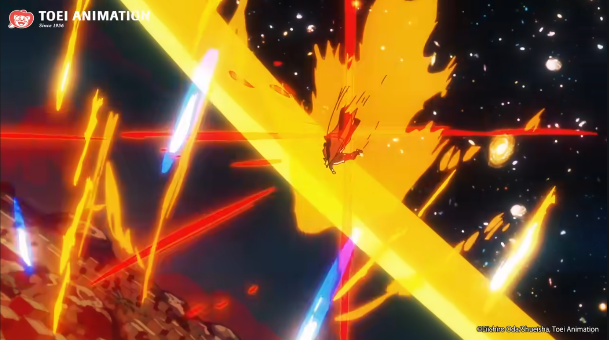

Episódio 1:
Aqui conhecemos os primeiros passos de Luffy, seus valores iniciais e personalidade. Temos a introdução da primeira antagonista pirata, "Alvida", com seu tripulante escravo "Koby".
Após Luffy ser pescado do mar por um cruzeiro de viagem, pois derivava dentro de um navio (DORMINDO), a pirata Alvida ataca este barco e alguns de seus capangas correm para o estoque
para pegar escondido algum barril de bebidas, nisso, Luffy sai do barril à todo vapor nocauteando os dois capangas, e juntos dos dois estava Koby, uma pequena criança que por
azar do destino, acabou em um barco de bandidos criminosos, mas quer ser um herói da marinha um dia. Luffy derrota os capangas e sai com Koby para o mar em busca de Zoro.

Episódio 2:
Neste episódio, temos a introdução de Zoro, um caçador de piratas. Por algum motivo, Luffy queria recruta-lo para seu bando, sendo o 2° membro. Koby diz que ele é maluco, pois Zoro
está preso em uma base pirata, e é um caçador de piratas, mas Luffy explica para Koby que confiará em seus instintos e olhos, e enquanto não ver Zoro, ele não acreditará em histórias.
Koby acha isso incrível, mas ainda é cético, pois a Marinha não erra e possivelmente Luffy sairá sem Zoro e no máximo preso. Nisso, temos uma garota que faz alimento para Zoro que está
preso exposto ao sol fervente por 23 dias, após bater em um filho da marinha após ele abusar de seu poder em um bar. Ela apanha pela marinha no episódio com Koby presenciando a corrupção.

Episódio 3:
No episódio 3, Luffy e Zoro derrotam Morgan, o corrupto chefe daquela base da Marinha, e tiram dos marinheiros a vida miserável ao serem liderados por Morgan.
Luffy e Zoro vão para uma casa próxima ao mar para se alimentar antes de ir embora, e Luffy com seu otimismo explica que o bando é composto somente por Zoro e o próprio Luffy, e o barco
facilmente os mataria em qualquer tempestade, Zoro começa a se questionar sobre a sanidade de seu novo capitão, mas não reage como quem quer sair, pois já confia sua vida em Luffy após ser liberto por ele.
Koby também se sente eternamente grato à Luffy, e é feito uma promessa em que ambos se encontrarão no futuro mais fortes. Isso será provado no dia 10 de Junho de 2007, quase 8 anos depois do lançamento do episódio 3.

Episódio 4:

Por fim, para terminar o prólogo, temos a apresentação de sua maior inspiração e ex-detentor de seu atual chapéu de palha, "Shanks, o Ruivo". Shanks foi um pirata
que salva Luffy de um Monstro Rei do Mar, pois Luffy havia sido jogado na água por um bandido e como Luffy não sabia nadar, o único destino era ou se afogar ou ser devorado,
até que Shanks assusta o monstro após o ataque mal sucedido em Luffy, que levou o braço esquerdo de Shanks. No final, Shanks entrega para Luffy seu chapéu, pedindo para devolver a ele
quando Luffy for mais forte e poder encontra-lo no mar. Já são mais de 25 anos que esse reencontro tão aguardado ainda não aconteceu.
Episódio 1114:

Garp, avô de Luffy, chega na "Beehive", esconderijo eterno dos piratas, um país sem lei, para salvar "Koby", o atual "Herói da Marinha", aqui é entregado ao telespectador
que se questionava sobre a força do avô de Luffy apresentado 16 anos atrás, mas nunca de fato sendo mostrado, um show de qualidade e empenho na arte de One Piece. Demonstrando grande poder,
a liberdade criativa permite criar um cenário em que o golpe de Garp, chamado "Galaxy Impact", deixe a cena num limiar entre a terra e o universo, representando o quão forte pode ser o
poder do homem que parou o único Rei dos Piratas que existiu até o momento, em 800 anos. À esquerda, uma foto de como o telespectador padrão reagiu à essa belezura!